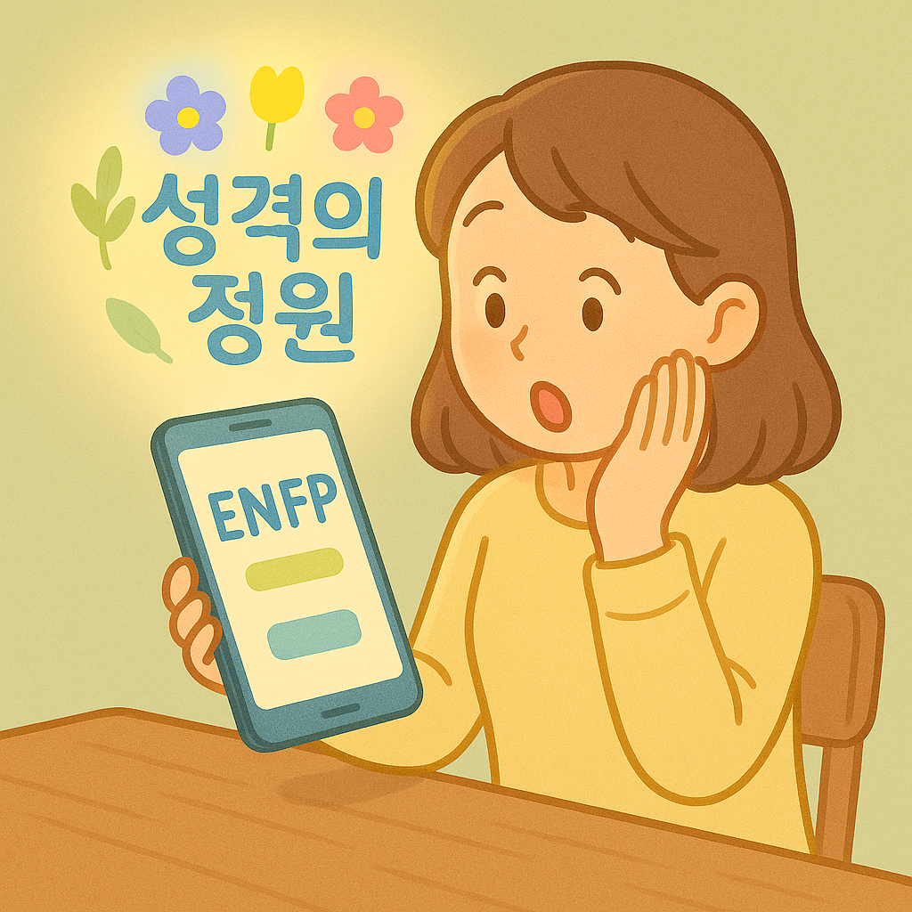

당신의 성격 유형을
이곳에서 확인해보세요
성격의 정원에서 당신의 성향을 알아가고, 소중한 관계를 가꾸어보세요!
"MBTI란?"
→ Myers-Briggs Type Indicator 의 약자로 개인의 성격을 네 가지 지표를 바탕으로 총 16가지 유형으로 분류하는 심리 검사입니다. 각 유형은 사람들의 사고방식, 행동 패턴, 대인관계의 차이를 이해하는 데 도움을 주며, 자기이해와 진로 탐색, 인간관계 개선 등에 널리 활용되고 있습니다.
성격의 정원은 이렇게 이용해요. 검사, 유형, 궁합을 한 번에 확인해보세요!!
1. 검사
간단한 mbti 검사를 진행합니다.
2. 결과 확인

진행한 검사의 결과를 확인합니다.
3. 궁합 확인
다른 사람과의 궁합을 확인합니다.
성격의 정원을 이용한 사용자들의 후기들을 확인하세요!
제 mbti에 대해 알 수 있어서 좋은 경험이었습니다. 이를 통해 저에게 걸맞는 직업을 알 수 있었고 제 여자친구와 궁합도 알 수 있었어요! 추천합니다.
이젠 혈액형이 아니라 mbti로 성격을 구별하는 시대가 왔네요.
mbti 결과가 저와 너무 닮아서 소름돋았습니다. 인간관계에 있어 좋은 조언을 얻을 수 있어서 유익했습니다!
mbti 결과가 저와 너무 닮아서 소름돋았습니다. 인간관계에 있어 좋은 조언을 얻을 수 있어서 유익했습니다!